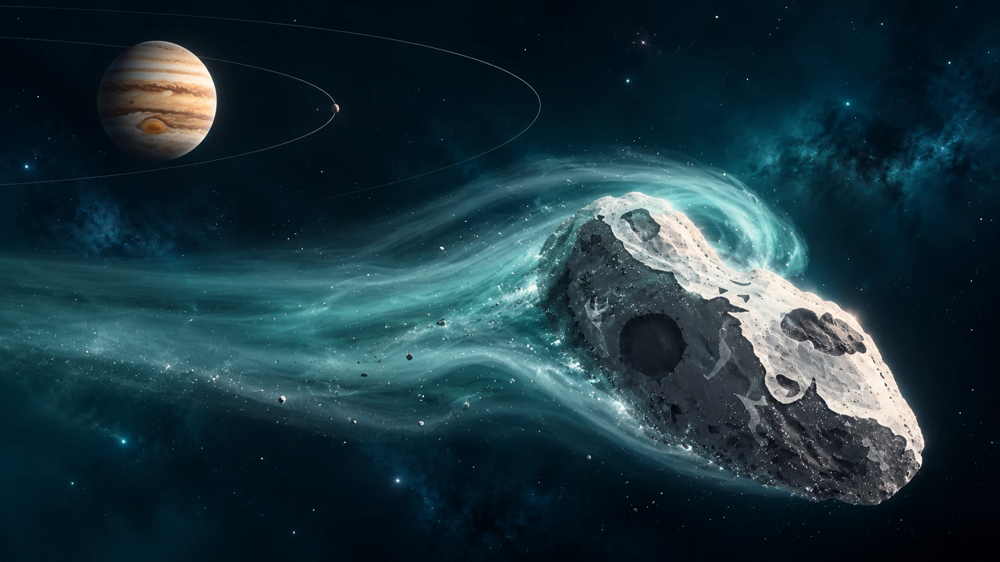
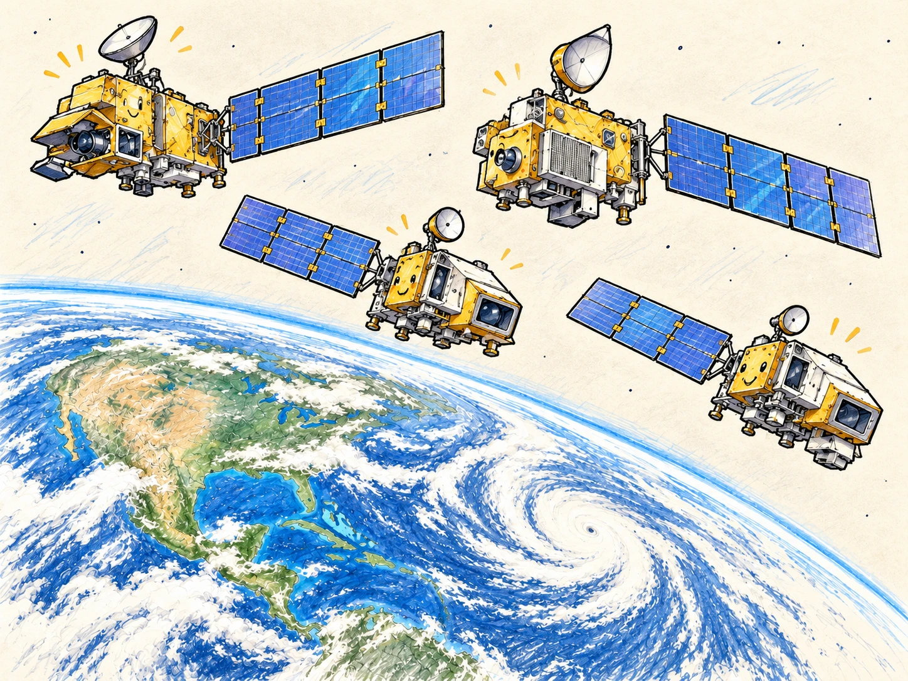
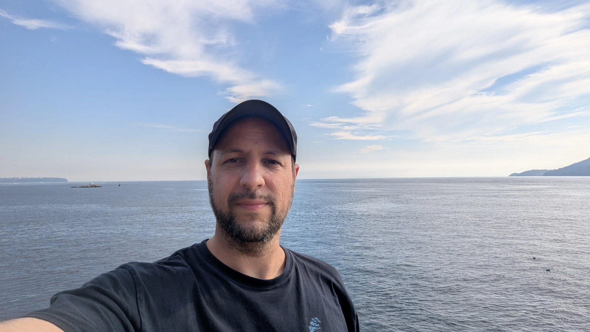
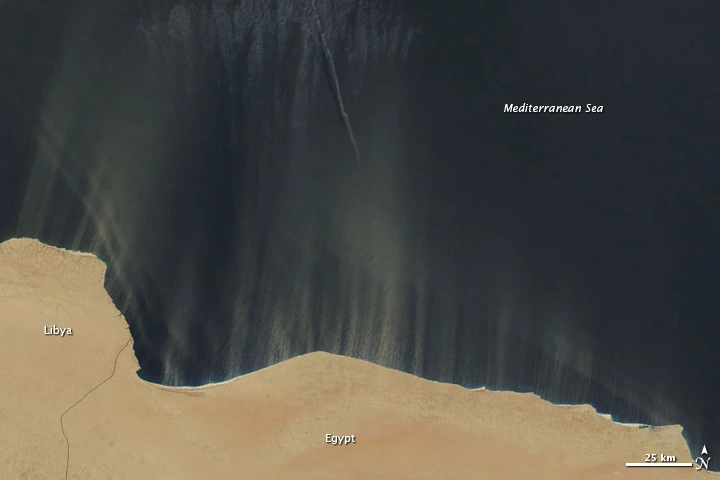
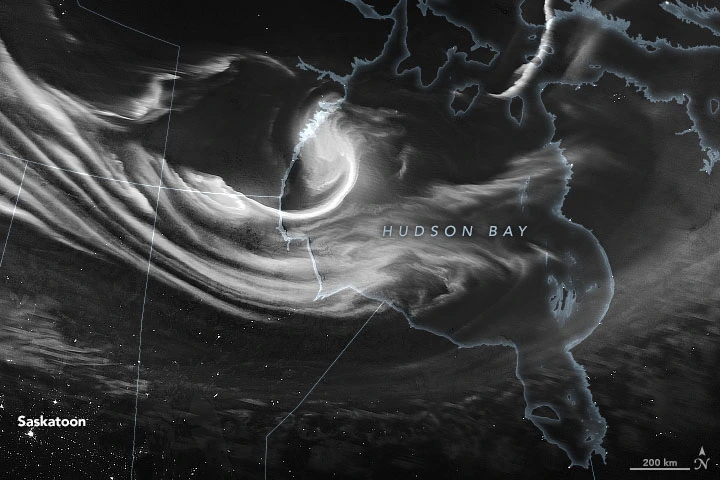
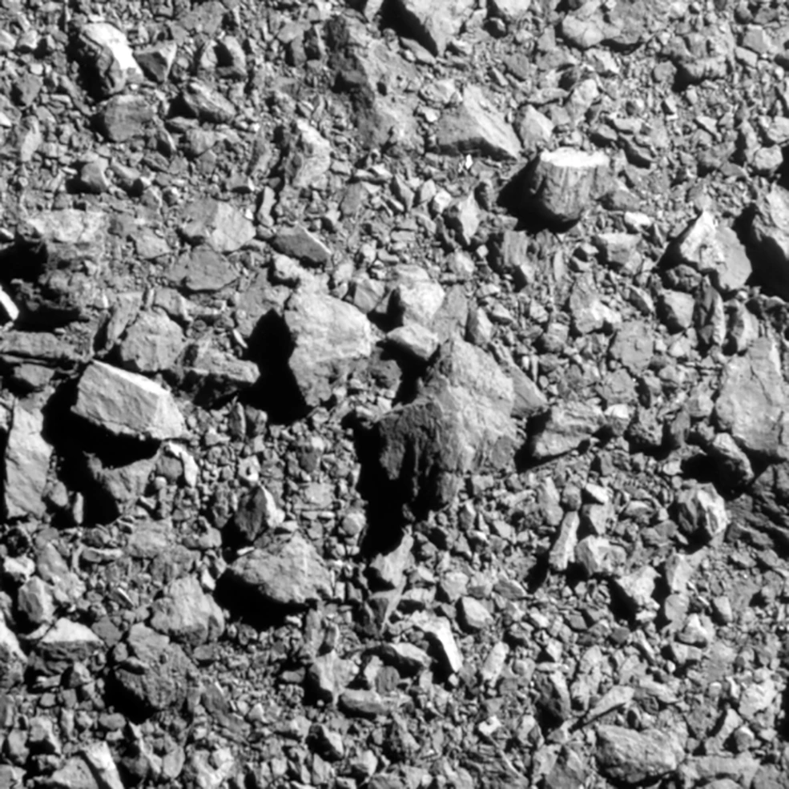

Small bodies and their evolution
Comets, Centaurs, asteroids, and icy planetesimals: how they formed, how they change, how their orbits evolve, and what present-day activity can tell us about their history.
I’m an Earth and planetary scientist. On the Earth-observation side, my work involves calibration and analysis of satellite data. On the planetary side, my work involves studying comets, asteroids, planet formation, and mission-related science. The common thread is simple: understand the underlying physics, understand the actual measurement, and make sure the two tell a consistent story.



In both fields, I’m trying to infer a physical system from measurements that have limits and uncertainties. Sometimes the system is a comet or asteroid. Sometimes it is the instrument itself. Models tell us what to expect; data tell us where the model needs work.
Comets, Centaurs, asteroids, and icy planetesimals: how they formed, how they change, how their orbits evolve, and what present-day activity can tell us about their history.
On-orbit calibration and characterization of MODIS reflective solar bands and the VIIRS day–night band, especially long-term changes that matter for the science data record.
Numerical models, time-series analysis, and research software in Python, C/C++, Fortran, shell, Linux, and Git.
Satellite images and spacecraft observations sit at the end of a long chain of geometry, instrument response, calibration, modeling, and interpretation. These three examples come from the systems and targets discussed elsewhere on this site.



The examples below span satellite calibration, comet dynamics, and asteroid ejecta. Each starts with a concrete measurement or modeling problem.
Terra and Aqua are now sampling solar-diffuser geometries outside much of the range characterized early in the missions. My 2022 first-author study examined calibration options for that regime; later team work used additional Aqua yaw maneuvers to characterize the changing geometry.
Why it matters: the goal is to keep reflective-solar-band calibration reliable as these long-running missions move into a new part of their orbital life.
I support day–night-band calibration for NOAA-20 and Suomi NPP. The work includes tracking calibration behavior across the DNB’s large dynamic range; collaborative publications also cover NOAA-21 performance.
Why it matters: stable calibration is what makes low-light measurements comparable over time rather than just visually striking.
Numerical orbital integrations identified a short-lived, low-eccentricity region just outside Jupiter through which many objects pass on their way from the Centaur population to Jupiter-family comet orbits.
Why it matters: the Gateway gives us a specific place to study the dynamical transition and the onset of comet-like physical activity together.
A 2024 study simulated 72 variations of the Didymos system and grouped the resulting ejecta distributions and surface-return times to see which system properties most strongly control the outcome.
Why it matters: the work provides a baseline for predicting how a binary system’s configuration changes where impact ejecta goes and how quickly material returns to a surface.
A short list from both sides of my research, with first-author work marked on the publications page. Full records are available through Google Scholar, ORCID, ResearchGate, and ADS.
If you have a scientific or technical problem that overlaps with my background, I’m happy to talk and see whether I can be useful. I’m not promising current availability, and any outside work would need to be compatible with my employer obligations.
What I can help with →